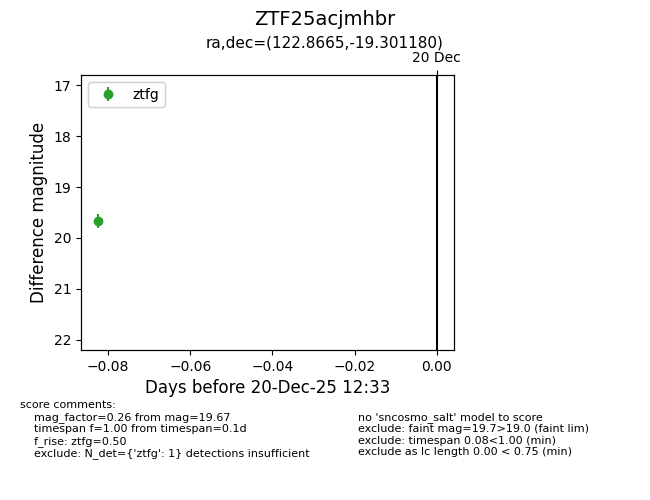
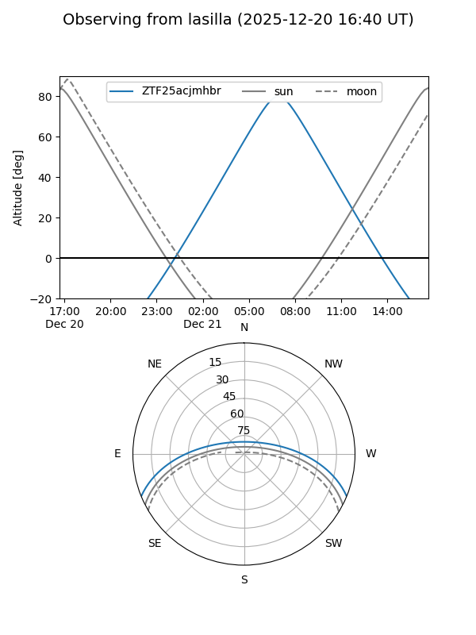
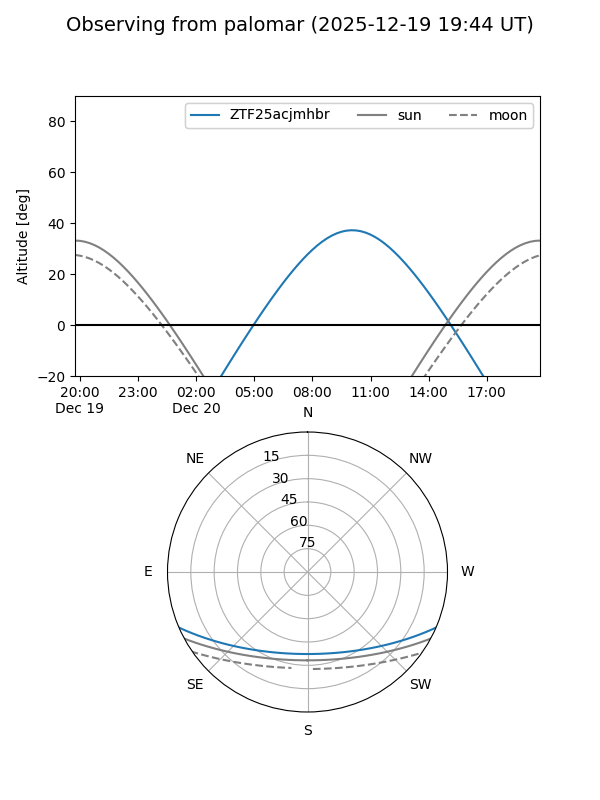

ZTF25acjmhbr
Target ZTF25acjmhbr at 2025-12-20 12:34
Aliases and brokers:
FINK: fink-portal.org/ZTF25acjmhbr
Lasair: lasair-ztf.lsst.ac.uk/objects/ZTF25acjmhbr
ALeRCE: alerce.online/object/ZTF25acjmhbr
alt names
ZTF25acjmhbr (ztf,fink_ztf)
Coordinates:
equatorial (ra, dec) = 122.8665,-19.30118
equatorial (HMS+DMS) = 08:11:27.97,-19:18:04.25
galactic (l, b) = (239.3931,+7.85487)
Flags:
Photometry:
last ztfg=19.67
1 ztfg detections
Lightcurve

Visibility


Additional plots